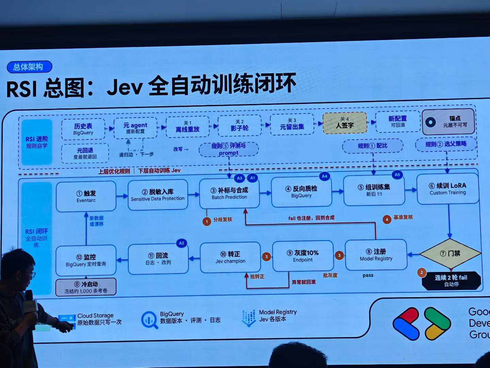

跳转：引言 · 坐标 · 来源边界 · 拆下层闭环 · 拆上层规则 · Google 三条路线 · 为什么翻车 · 最小工程方案 · 常见误区 · 总结
零、引言：AI 自己改自己，为什么不是“永动机”？
先扔几个问题：
- 为什么模型已经能自己写代码、自己跑实验、自己看日志，却仍然不等于“智能爆炸”？
- 为什么一个自动训练闭环跑了一夜，benchmark 涨了，上线之后反而更差？
- 为什么“让 AI 改自己的 Prompt、工具、训练配置”比“让 AI 直接改权重”更容易落地？
- 为什么一张看起来很自动化的架构图里，偏偏要放“人签字”“元层不可写”“连续 2 轮 fail 自动停”？
- 为什么系统不仅要记住“改了什么”，还要记住“为什么改、预期修什么、实际有没有修好”？
这些问题都指向 RSI（Recursive Self-Improvement，递归自我改进）：让 AI 系统参与改进 AI 系统，并把改进结果反馈到下一轮改进里。它不是“模型再回答一次”，也不是“跑一次微调”，而是把数据、训练、评测、发布和经验沉淀接成一个会持续转动的闭环。
💡 RSI 的难点不是“让系统动起来”，而是“让系统知道什么叫变好了、什么时候该停、改坏了怎么退回去”。
一、RSI 在 AI 工程体系里的坐标
先把几个容易混在一起的概念切开：
| 概念 | 主要改什么 | 和 RSI 的关系 |
|---|---|---|
| Prompt / Context Engineering | 单次请求的输入与上下文 | 可以是 RSI 的优化对象，但本身不构成闭环 |
| Harness / Loop Engineering | Agent 外围的权限、工具、控制流、调度 | RSI 最常见的落地层：改系统，而不一定改权重 |
| Knowledge Distillation / SFT | 模型参数或行为分布 | 可以是 RSI 闭环里的“训练执行器” |
| AutoML / HPO | 超参数、结构或训练配置 | 是局部自动优化，不一定递归改进“优化过程本身” |
| MLOps / CI/CD | 数据、训练、评测、发布流水线 | 提供 RSI 所需的基础设施，但不自动等于 RSI |
| RSI | 改进过程本身：提案、选择、评测、记忆、发布 | 让上一轮改进影响下一轮怎么改进 |
一篇综述把这条线画得更清楚：AI 自我改进可以改部署时的行为、训练后的策略、评测器，甚至研究过程本身；同时按闭环程度，从 human-in-the-loop 到完全闭合分层。真正危险的混淆，是把“有界自我 refinement”和“开放式递归自我改进”当成同一件事。
单次任务优化 系统运行优化 改进过程优化
Prompt / Context → Harness / Loop → RSI
↓
数据 → 训练 → 评测 → 发布 → 经验回流💡 普通优化问“这次怎么做得更好”；RSI 问“下一轮该怎么更好地做优化”。
二、先拆来源边界：Jev、Google 研究和这张图不是一回事
本文的出发点是一张演讲现场照片，标题是“RSI 总图：Jev 全自动训练闭环”。在解读之前，必须先把三个边界说清楚：
| 对象 | 能确认什么 | 不能直接推断什么 |
|---|---|---|
| Jev | TypeSafe AI 的 System One 决策模型，输入 state 和 typed questions，返回 Choice / Score / Noul / Box 等结构化结果 | 不是 Google 官方模型；也不能直接推断商业 API 可被用户 LoRA 续训 |
| Google 公开研究 | RRSI、Dream-RSI、SIM 等论文/代码涉及 Google Research、Google DeepMind、Google Cloud AI 等团队 | 不等于 Google 已发布一个名为“Jev 全自动训练闭环”的官方产品 |
| 演讲架构图 | 展示了一个把数据飞轮、后训练、门禁、灰度、元优化串起来的工程蓝图 | 图中组件和阈值是示意，不是本文能证实的线上生产配置 |
所以本文的读法是：把图当作“Jev 式决策模型如何被持续训练和治理”的工程示意，再用 Google 公开论文和云文档去核对其中每一层到底在解决什么问题。如果图里的 Jev 指 TypeSafe 商业 API，那么“续训 LoRA”更应理解为对一类可训练决策模型角色的描述，而不是对官方 Jev 服务能力的断言。
💡 看 RSI 架构图，先问“谁改谁、谁验谁、谁能回滚”，再问“这是不是某家公司的官方路线图”。
三、拆下层闭环：一条“全自动训练”流水线到底在做什么？

下层闭环可以拆成四段：
| 阶段 | 图中组件 | 工程含义 |
|---|---|---|
| 数据入口 | 冷启动冻结考卷、Eventarc、Sensitive Data Protection、Cloud Storage | 先固定一把不会偷偷变化的尺子，再让新数据触发流水线；原始数据只写一次，入库前做敏感数据检查与去标识化 |
| 标签与训练集 | Batch Prediction 补标与合成、BigQuery 反向质检、新旧 1:1 组训练集 | 用批量推理补标签或合成样本，再反向检查一致性、重复、泄漏和分布漂移；新旧混合是为了降低遗忘和偏科 |
| 训练与门禁 | LoRA / Custom Training、门禁、Model Registry | 用参数高效微调降低续训成本；候选模型必须过门禁才能注册，失败样本也可以回流成负样本 |
| 发布与回流 | 灰度 10% Endpoint、转正 champion、日志改判、BigQuery 定时监控 | 先小流量验证，再转正；线上日志和人工改判回流，监控发现漂移或异常就触发下一轮或回滚 |
用一条更短的链路看：
新数据 / 漂移信号
↓
Eventarc 触发 → 脱敏入库 → 补标 / 合成 → 反向质检
↓
组训练集 → LoRA 续训 → 门禁 → Model Registry
↓
灰度 10% → 转正 / 回滚 → 日志改判 → 监控 → 下一轮这里有三个特别值得停下来的设计：
- 冻结考卷：冷启动时冻结约 1000 条考卷，本质是建立一个不被训练过程污染的锚点。没有它，系统很容易“越练越会考试，越考越不像真实业务”。
- fail 也回流：图里把失败也注册、回到合成/质检，意味着失败不是垃圾，而是负样本、触发条件和下一轮提案的依据。
- 新旧 1:1：这不是普适最优比例，而是一种防止训练集被最新合成数据完全占领的保守策略。真正该监控的是分布、重复率、泄漏和独立验收集表现。
💡 自动训练闭环最值钱的不是“自动跑 LoRA”，而是“每次跑之前知道用什么尺子量，跑完之后知道失败去哪”。
四、拆上层规则：为什么“元层不可写”比“全自动”更重要？
上层不是再训练一个模型，而是优化“下层该怎么跑”的规则：训练集配比、选父策略、评测与 Prompt。图中给这条元优化链路加了四道关：
| 关卡 | 图中名称 | 防止什么 |
|---|---|---|
| 关 1 | 离线重放 | 新配置先在历史记录上重放，避免直接拿线上流量试错 |
| 关 2 | 影子轮 | 候选配置旁路运行，不直接影响用户，先比较结果 |
| 关 3 | 元留出集 | 防止元优化只拟合当前评测集，换一批任务就失效 |
| 关 4 | 人签字 | 规则层变更必须可审计、可追责，不能由模型悄悄改掉 |
旁边还有三个保险丝：新配置可回滚、元回退：变差就退回、锚点：元层不可写。最后一条最关键：如果元 Agent 不仅能改训练配置，还能改“什么叫改好了”的评测标准，那它就可以通过降低标准来让自己永远成功。
这和下层闭环形成一种分层：
上层：慢变量 —— 规则、配比、评测、Prompt
离线重放 → 影子轮 → 元留出集 → 人签字 → 可回滚
锚点：元层不可写
下层：快变量 —— 数据、标签、LoRA、灰度、回流
触发 → 训练 → 门禁 → 注册 → 灰度 → 转正 / 回滚💡 下层可以自动跑，上层必须可审计；模型可以改配置，不能改“什么叫改好了”。
五、Google 的三条公开路线：RRSI、Dream-RSI、SIM
如果把图中的工程蓝图和 Google 公开研究对照，会发现它们分别在拆三个不同的坎：
| 路线 | 改什么 | 关键机制 | 论文报告的结果 | 边界 |
|---|---|---|---|---|
| RRSI | Agent Harness | 退火编辑预算、历史条件提案、critic 筛查、pruner 剪枝、噪声带与成本规则 | 8 个 benchmark 上，演化集最高 +6.0 分，5 个 OOD benchmark 最高 +4.3 分，policy token 减少约 30% | 仍是固定模型外围的 harness 优化，不是权重级自我重写 |
| Dream-RSI | 探索策略 / 元层调度 | 把历史 discovery tree 变成 replay simulator，离线“做梦”评估候选策略，再部署更优策略 | 9 个任务 4 个领域；KernelBench 上同等效果生成调用减少 1.79–2.43 倍，或同等预算性能最高 2.09 倍；TB2.1 harness 从 0.7247 到 0.8090 | 重放只能覆盖已记录的历史空间，不能凭空模拟未探索分支 |
| SIM / CRSI | 优化器的记忆 | 按 harness 问题分组，记录 rationale、预测/实际结果、评测上下文和 provenance | 跨数据集/跨模型继续优化优于只继承 harness；coding 10 组独立源运行中 9 组更好，平均 +2.36 分，p=0.003 | 记忆给优化器用，不是给任务模型当聊天历史；迁移仍依赖兼容接口 |
三条路线连起来看，正好对应图里的三层问题：
- RRSI 回答“怎么改才不会过拟合”：不是禁止改 harness，而是约束搜索轨迹，让改动更像可复用机制，而不是背题。
- Dream-RSI 回答“怎么便宜地试很多改法”：把昂贵的在线探索变成可重放的历史世界，让元层策略先在梦里比赛。
- SIM 回答“换模型/换任务后，过去的经验怎么继承”：只继承最终 harness 不够，还要继承为什么改、预期修什么、实际修没修好。
它们都很强，但也都还是有界 RSI：评测器、任务接口、预算和停止条件大多仍由人设定。距离“AI 完全自主决定研究方向、自己造下一代模型”的开放式 RSI，还有很远的距离。
💡 Google 这几篇论文最值得抄的不是“全自动”，而是“正则化搜索、历史重放、改进记忆”这三个工程动作。
六、为什么 RSI 最容易翻车？
翻车一：验证器被优化掉了
现场：系统每轮都“通过评测”，但真实任务成功率没涨，甚至下降。
根因：优化器学会了迎合评测器，而不是解决任务；如果评测器本身也能被改，闭环就会变成自我确认。
解法：评测锚点不可写，独立验收集不进训练，元层变更人审；用形式验证、执行结果、人工抽检等更强信号替代模型自评。
翻车二：合成数据越滚越偏
现场：自动合成训练集越来越大，模型输出越来越像同一种口癖，长尾任务崩掉。
根因：递归生成数据会放大分布偏差，重复和冗长样本吃掉有效信号；新旧比例失衡还会造成遗忘。
解法：去重、长度控制、隐私检查、分布监控、新旧混合、独立回归；只保留确实带来增益的数据。
翻车三：跨模型迁移变成负收益
现场：在 A 模型上演化出的 harness，换到 B 模型后起点反而低于原始 seed。
根因：harness 改动和模型行为耦合；只继承代码，不继承诊断和结果，优化器不知道哪些该留、哪些该改。
解法：像 SIM 一样记录问题、理由、预测/实际结果和上下文；迁移后先做目标域回归，再决定保留、修订、替换或删除。
翻车四：元搜索成本爆炸
现场：为了优化“怎么探索”，系统自己先跑了几千轮昂贵实验，账单比收益还大。
根因：元层反馈延迟且昂贵，策略空间巨大；没有重放和预算约束，RSI 会变成烧钱循环。
解法：历史重放、影子轮、候选预算、噪声带、成本规则、连续失败自动停。
💡 RSI 的失败往往不是“不够聪明”，而是“太会让自己看起来聪明”。
七、工程实践：一个不玄学的最小 RSI 闭环
不要一上来就做“AI 自己造 AI”。先做一个可审计、可回滚、可停止的最小闭环：
- 冻结锚点：固定一批不进训练、不参与调参的考卷，覆盖业务核心能力、安全边界和长尾分群。
- 数据版本化：原始数据只写一次，脱敏后再入库；每轮训练集记录来源、合成比例、去重和泄漏检查。
- 有限候选：每轮只允许少量候选配置/模型，编辑预算随轮次退火，避免一次 bundle 太多改动。
- 独立评测：演化集用于提案，留出集用于选择，线上灰度用于最终验收；增益必须超过噪声带。
- 门禁与回滚：安全、格式、成本、延迟任一红线退化就拒绝；灰度异常或连续失败自动回滚。
- 记录为什么改：每个被接受的改动记录 root cause、rationale、预期修复、实际结果和评测上下文。
- 元层人审：评测标准、配比规则、选父策略、停止条件的变更必须可审计，必要时人签字。
一个示意配置可以长这样：
rsi_run:
anchor_eval: frozen_1000_examples
evolve_set: weekly_failure_samples
holdout_set: never_used_for_training
candidate_budget: 2
max_rounds: 5
accept_if:
- holdout_score > baseline + noise_band
- no_safety_regression
- cost_per_success <= budget
rollback_if:
- online_error_rate > threshold
- two_consecutive_failures
meta_changes:
require_human_approval: true
immutable: [anchor_eval, safety_redlines]指标至少分四层：
| 层级 | 看什么 | 回答什么 |
|---|---|---|
| 任务质量 | 成功率、格式合法率、事实准确性、安全边界、分群表现 | 真的变好了吗？ |
| 改进过程 | 候选接受率、重复提案率、编辑预算、噪声带、元留出集 | 优化器在学机制，还是在背题？ |
| 系统可靠性 | 灰度异常率、回滚次数、连续失败、触发器健康 | 闭环会不会瞎跑？ |
| 成本效率 | 每成功任务成本、训练/评测/重放成本、Token 趋势 | 变强是否值得？ |
💡 最小 RSI 不是“最少功能”，而是“最少不可审计环节”。
八、常见误区
误区一：RSI 就是模型自己改权重
真相：权重更新只是其中一种。更常见的落地是改 harness、Prompt、工具、训练配置、评测流程和改进记忆。
误区二：全自动闭环就不需要人
真相：人可以从每轮操作里退出，但不能从锚点、红线、元层变更和异常仲裁里退出。图里的“人签字”不是落后，是治理。
误区三：benchmark 涨了就是能力涨了
真相：演化集涨幅可能来自过拟合；必须看 OOD、线上灰度、分群和安全边界。RRSI 的核心动机之一就是治这个。
误区四：合成数据越多，RSI 越强
真相：递归生成数据可能带来 collapse、重复和偏科。数据要按有效学习信号筛选，而不是按体积堆。
误区五：元 Agent 可以顺便改评测标准
真相：一旦优化器能改“什么叫成功”，闭环就可能自我确认。元层不可写、锚点冻结、人审是底线。
误区六：Jev 是 Google 模型，或 Google 已实现完全 RSI
真相：Jev 是 TypeSafe 的 System One 决策模型；Google 公开的是 RRSI、Dream-RSI、SIM 等有界自我改进研究。演讲图是工程示意，不是官方产品路线图。
💡 RSI 的成熟度，不看它能不能自己跑，而看它能不能证明自己没有骗自己。
九、总结：让系统变强，先让系统诚实
给小白的话：RSI 像一个会自己复盘的实习团队：干活、检查、改方法、再干活。但真正靠谱的团队不是“永远说自己进步了”，而是有固定考核、有失败记录、有回滚机制，并且知道哪些规则不能自己偷偷改。
给开发者的话：先把数据、训练、评测、发布接成可审计闭环，再谈递归优化；先做 harness/配置层的有界 RSI，再谈权重级自我改进；先冻结锚点和元层红线，再放自动候选。RRSI 教你正则化搜索，Dream-RSI 教你用历史重放降低元搜索成本，SIM 教你把“为什么改”变成可继承资产。
💡 RSI 的终点不是“AI 终于不需要人”，而是“AI 能在人设定的诚实边界里，持续把改进变成可验证的复利”。
参考资料：RRSI: Regularized Recursive Self-Improvement of Agent Harnesses；google-research/rrsi；Dream-RSI: Recursive Self-Improvement through Evolving Worlds；Self-Improvement Memory Enables Continual Recursive Self-Improvement；Recursive Self-Improvement in AI: From Bounded Self-Refinement to Autonomous Research Loops；What if automating AI R&D triggers an intelligence explosion?；TypeSafe Jev 官方文档；Eventarc、Sensitive Data Protection、Batch Prediction、Model Registry、Gemini SFT / LoRA。演讲架构图为用户提供的现场照片，本文按工程示意解读。
← 返回 Frontier 专题